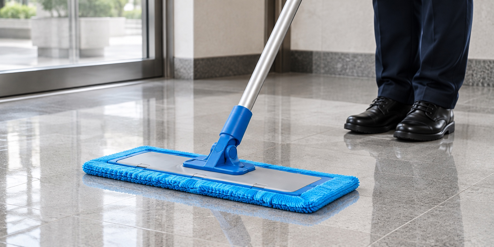
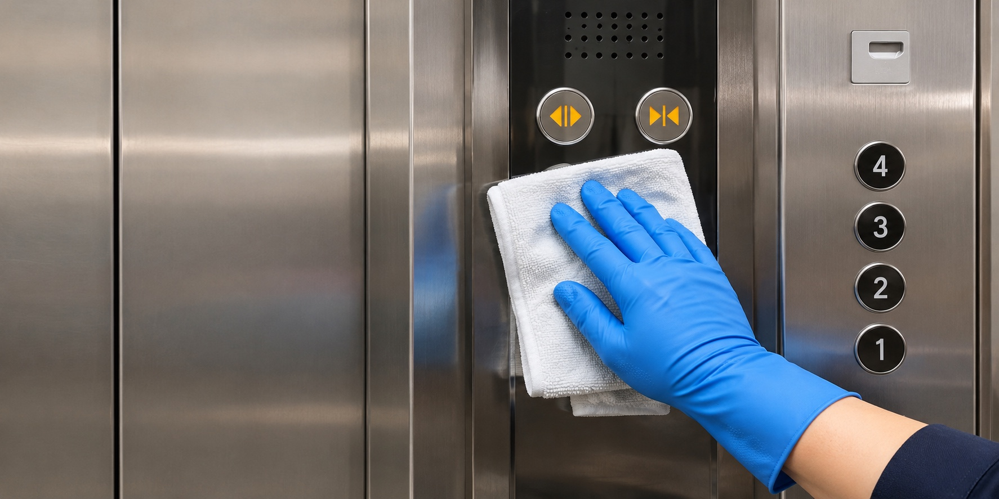

계단 쓸기
계단과 계단참의 먼지·모래를 쓸어 정리합니다.
매일 오가는 계단을 산뜻하게.

계단과 계단참의 먼지·모래를 쓸어 정리합니다.

계단 바닥에 남은 먼지와 오염을 닦아냅니다.
난간과 손잡이의 먼지·손자국을 닦습니다.
유리문 표면의 먼지와 손자국을 닦습니다.
주차장 바닥의 먼지와 주변을 정리합니다.

승강기 바닥·문·버튼 주변을 닦습니다.
청소에 포함되는 항목과 방문 일정은 현장 상담에서 정합니다.
경기도 김포시
청소를 원하는 내용을 말씀해 주세요.
건물 상태와 청소할 범위를 확인합니다.
협의한 범위와 일정에 맞춰 청소합니다.
현장 방문 후 건물 상태와 청소 범위를 확인해 안내합니다.
010-6698-7572로 전화하거나 문자를 보내주세요.